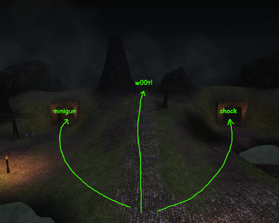
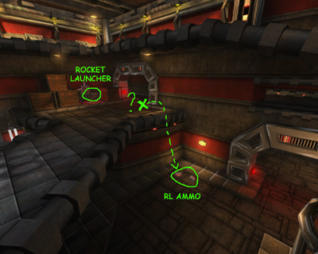
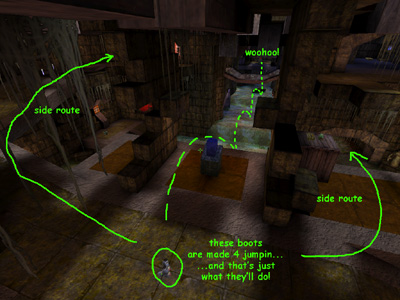

Mapping For Jailbreak/Risk Balance
Risk Balance
Should I go down and grab that Damage Amp, or stay up here with my bio-rifle...
One of the most fun parts of designing a level for me is also giving the player choices throughout the entire level. This aspect is very important, and is relevant to all gametypes. I like to call it "Risk Balance". Either on a broad scale ("Should I take the left route, that has the UDamage, to the enemy base – or should I take the right route, where I am less likely to encounter that l33t Spoondog on the way..."), or on a smaller scale ("Oh crap, I could jump down and grab the RL, but I think Spoondog might own me, so maybe I'll stay up here with my mediocre weapon..."). As a level designer, you have the opportunity to create as much of that as you like, and what better game to do it in than Unreal Tournament – with so many weapons, fire modes, pickups and varying opportunities at your disposal...
Here are some common examples in my Jailbreak maps:

Broad scale risk balance in JB-CastleBreak. |
JB-CastleBreak (JB2003/2004) – Example of very broad risk balance situation – "Hmm... I wanna go up the middle to the top of the hill and grab the super shield but I'll probably get my head sniped off, and there's no weapons up there... On the other hand, I could just take one of the side routes – that way I won't get the super shield but at least I'll get a minigun or shock-rifle for my troubles..." JB-CastleBreak (JB2003/2004) – Example of balancing switches – "That release switch is the quickest to get to, but I have to go over the drawbridge and I think someone might close it before I get there... so I'll go around the back and use the other release switch – it takes longer but they can't block me off that way..." |

Small-scale risk balance in JB-IndusRage2. |
JB-IndusRage2 (JB2003/2004) – Example of a smaller risk balance situation – "There's some RL ammo down there – I could jump down and be sweet-as for ammo for this round, but then I'll end up on the lower level, so maybe I should just keep my good spot up here and make-do with the ammo I've got..." |

Using the jump boots in JB-Relic. |
JB-Relic (UTJB) – Example of pickup usage – "I could take one of the normal routes down the sides, or I could wait here for those JumpBoots to respawn and use them to jump right down the middle over the waterfalls for a quick release..." |
This is not a new concept – you will notice it in almost every map you come across, to a varying degree. But try and fit it into your levels wherever possible as it enhances gameplay so much and extends the replayability of your level.
Previous: /Team Deathmatch or CTF – Next: /Boring Jails